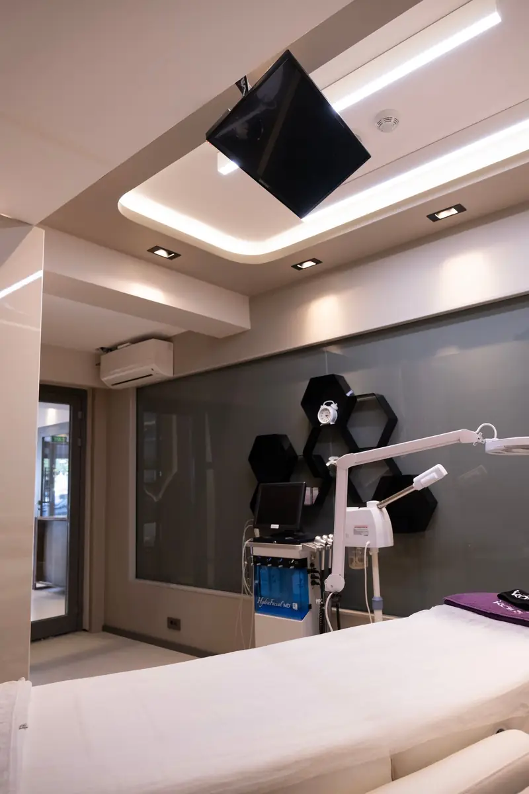

Thread-lift simulation on a 3D face scan

Thread-lift simulation in Faceliora Clinic draws the skin up along a thread’s course. A clinician chooses the thread and how far it draws, and the client’s scan shows where the skin would come back to. Only skin that the scan shows hanging moves, so a face with little laxity changes little. Every view is a simulation for communication, not a guaranteed result.
Capability details are as described by the previous website; not yet verified by product testing.
Key points
- Seven thread lifts, named the way Thai clinics name them, plus a nose thread in the nose zone.
- The simulation takes up slack and never pushes the face inward.
- A face with little sagging shows a small change, by design.
Which thread lifts can be simulated
Each thread lift sits in the zone it belongs to, as the last slider of that zone.
- Jawline
- Under-chin
- Cheek
- Nasolabial fold
- Mouth corner
- Brow
- Eye-tail
- Lifts only skin the scan shows hanging
- A face with little laxity changes little
- Jawline thread
- lifts the skin that hangs under the jaw line.
- Under-chin thread
- brings the skin behind the chin up toward the line of the chin.
- Cheek thread
- brings tissue up onto the front of the cheek and opens the upper part of the fold.
- Nasolabial fold thread and mouth-corner (marionette) thread
- raise the floor of the groove, never flattening its banks.
- Brow thread and eye-tail (“foxy eyes”) thread
- the skin slides up while the middle of the lid stays where it is.
A lift, not a stretch
A thread does not add volume or move bone, so the simulation pushes no point outward. For each thread it reads the line the skin would follow if it were taut and brings skin that hangs below that line back up to it, and no further. What is taken up arrives as a low, gentle rise on the front of the cheek, where the jaw and cheek threads would carry it. Skin that does not face downward is never moved into the face, and the outline of the face seen from the front stays where it was.
How far the thread draws, and how much the face has
The slider sets how far the thread draws. The face answers with what it actually has hanging: on a client with little laxity, the jaw, cheek, under-chin and fold lifts change little, and that is intended. It matches the conversation in a clinic, where the same thread does more on a face that sags more.
Because the lift reads the face as it is shown, it also takes up slack that another simulation created, such as fullness added under the chin, without ever going past the line of the original scan.
Combined with other simulations
Thread lifts are kept in the case’s layers together with injections and surgical changes. A clinic can show a thread plan alone or beside a filler plan, and compare both with the original scan from any angle.
What the simulation does not show
The scan shows the surface of the skin only. The simulation cannot show the type or number of threads, the directions a physician would choose, how long a lift lasts, dimpling or any complication. Whether threads suit the client is the physician’s decision after an examination.
Every view in Faceliora Clinic is a simulation for communication, not a guaranteed result, and does not replace a physician’s examination and advice.
Simulation is not diagnosis, prediction or a guarantee of treatment outcomes.